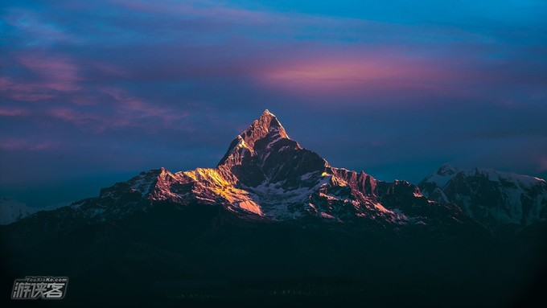
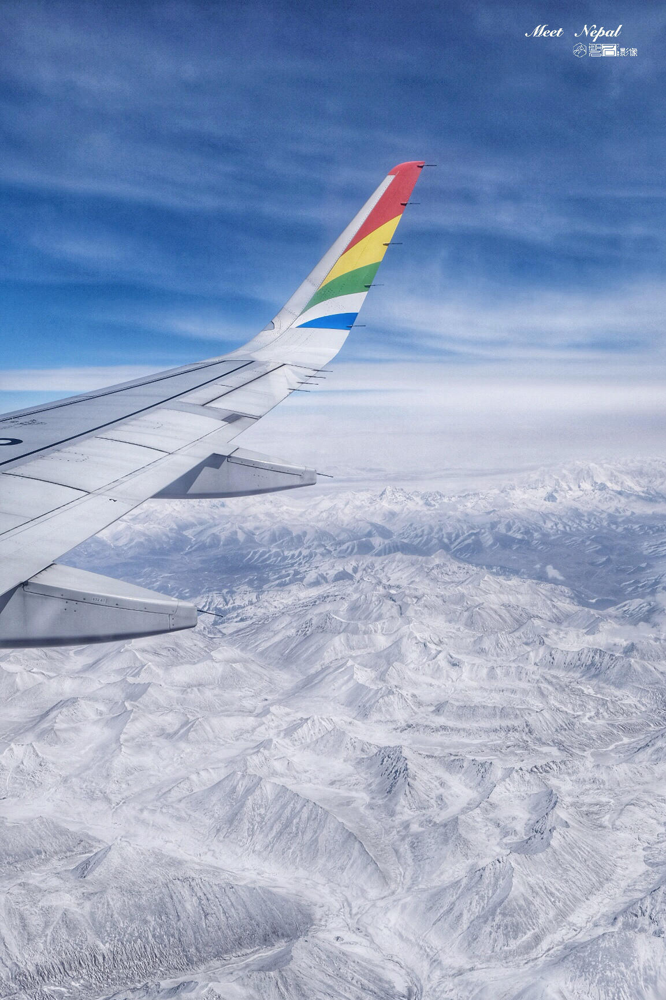
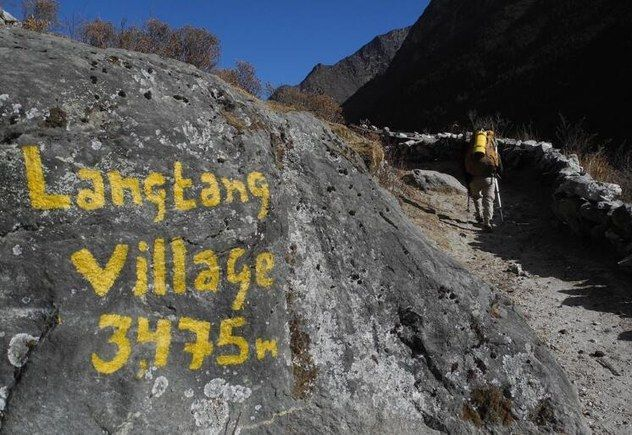
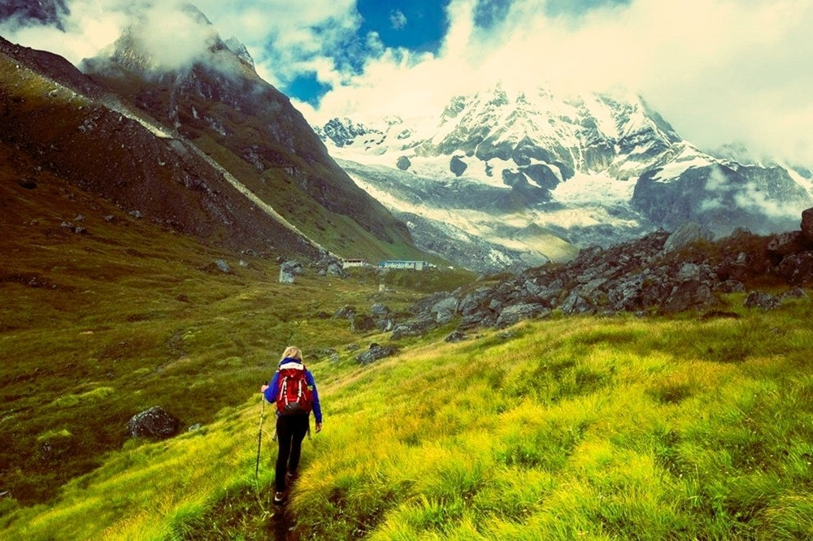
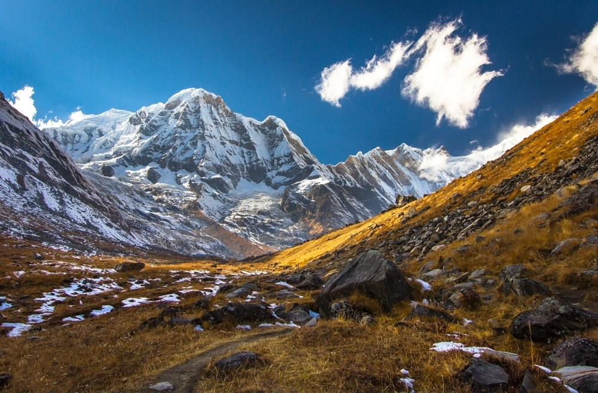
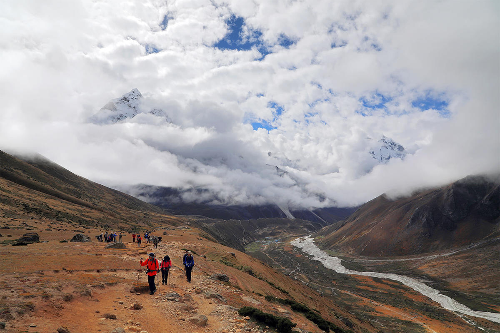
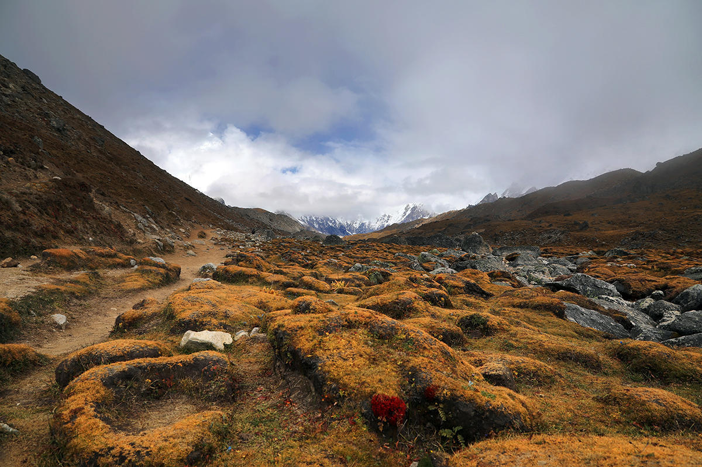
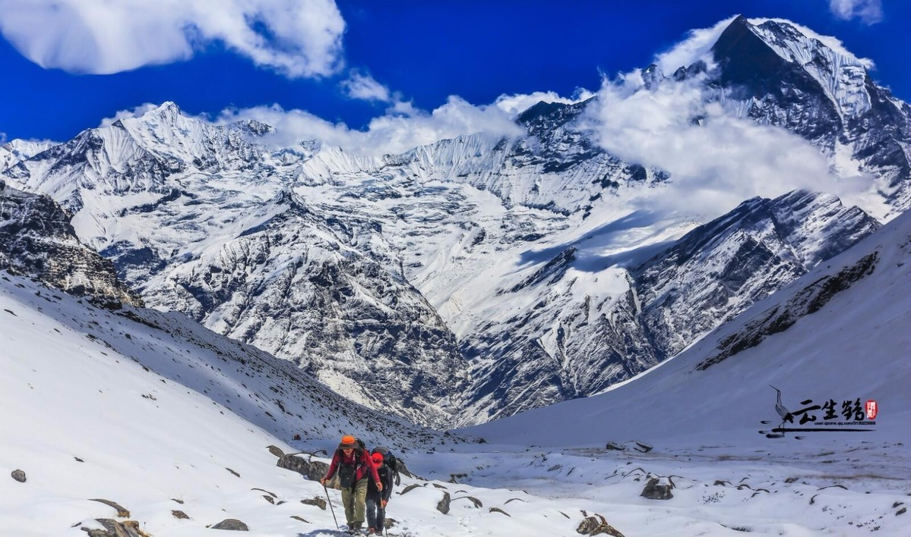

118人体验过
阅读 8952 2018-04-04 自由行攻略尼泊尔位于喜马拉雅山脉南麓，全球最高的10座8000米以上的山峰有8座在尼泊尔境内，这里拥有世界上最好的徒步线路，被称为徒步者的天堂。其实按照当地的区别，有多达十几条线路可以选择，甚至你自己也可以跟向导商议开辟一些新线路出来。
尼泊尔4大经典的徒步路线
各地海拔情况：加德满都：1300米，博卡拉：800米，奇旺：150米，纳加阔特：2000米，这里不会像西藏那样的高原反应。
布恩山（Poon Hill）小环线
布恩山（Poon Hill）小环线（也有一种说法，把poon hill也称ABC小环线）；
时间：4-5天难度： ★☆☆☆☆
亮点：这条线路基本上是尼泊尔徒步线路的入门款了，只要是身体健康，正常人都可以轻松的走完这条路线，这条线路的特点就是可以用最短的时间完成山地环线，而且可以非常轻松的远观安娜普尔纳群山
 图：Poon Hill徒步
行程推荐：
图：Poon Hill徒步
行程推荐：
D1：博卡拉--南丫浦Nayapul--伯尔塞提Birethanti--乌勒里Ulleri
D2：乌勒里Ulleri--戈勒帕尼Ghorepani
D3：戈勒帕尼Ghorepani--登顶布恩山Poon Hill--塔达帕尼Tadapani-- 冈杜克Ghandruk
D4：冈杜克（Ghandruk）--南丫浦Nayapul--博卡拉Pokhara
十一轻松GO · 尼泊尔 Poon Hill 4天3晚经典徒步·ABC小环线之旅-1人成行·含中文向导+背夫（博卡拉集合-安娜普纳山脉+戈勒帕尼+Poon Hill赏日出-VIP私家专属小团·可调整）
安娜普尔纳大本营线
安娜普尔纳大本营线 （Annapurna Base Camp,简称ABC，也称为大本营）
时间：7-10天难度：★★★☆☆
亮点：这条路线如此知名的原因在于，可以非常近距离地观赏安娜普尔纳峰，也可以看到它对面的尼泊尔神山鱼尾峰，也是是国人最为熟悉也是最受国人欢迎的徒步线路。
 图：鱼尾峰 行程推荐：D1：Dhampus--Tolka--landruk
D2: lANDRUK--Jhinu Danda--Chomrong
D3: Chomrong--Bamboo--Doban--HimalayaHote
D4: HimalaayaHote--Deurali--MBC-ABC
D5: ABC--MBC--Deurali--Bamboo--Sinuwa
D6: 12Sinuwa--Chomrong--New BRidge
十一轻松GO · 尼泊尔 Poon Hill 4天3晚经典徒步·ABC小环线之旅-1人成行·含中文向导+背夫（博卡拉集合-安娜普纳山脉+戈勒帕尼+Poon Hill赏日出-VIP私家专属小团·可调整）
安娜普尔纳大环线
安娜普尔纳大环线 （Annapurna Circuit Trek, 简称ACT）
时间：15-21天难度：★★★★☆
亮点：此线路海拔覆盖面广，从热带雨林到5000+海拔的高寒垭口应有尽有，可以说作为世界级的徒步线路名不虚传，安娜普尔纳大环线是常年在世界各种徒步线路top10上榜上有名的徒步线路。徒步者在15-20多天的时间里可以环绕整个安娜普尔纳山区，看到壮丽的安娜普尔纳山区各个山峰的风景，体验从印度教到藏传佛教不同的山地文化。
 图：安娜普尔纳大环线
行程推荐：
图：安娜普尔纳大环线
行程推荐：
D1：D2:Besisahar--Nagdi--Chamje
D3：Chamje--Tal--Dharapani
D4：Dharapai--Timang--Chame
D5：Chame--Bhratang--Pisang
D6：PIsang--Manang
D7：Manang--Yak Kharka
D8：Yak--Letdar--Thorang Phedi--High Camp
D9：High Camp--Thorong--La Pass--Muktinath
D10：Muktinath--Jomsom--Marpha
D11-D14：Marpha--Tatopani
十一轻松GO · 尼泊尔 Poon Hill 4天3晚经典徒步·ABC小环线之旅-1人成行·含中文向导+背夫（博卡拉集合-安娜普纳山脉+戈勒帕尼+Poon Hill赏日出-VIP私家专属小团·可调整）
珠峰大本营线
（Everest Base Camp Trek，简称EBC
时间：12-17天难度：★★★★★
亮点：这条线路除了可以近距离接触世界之巅珠穆朗玛峰之外，还可以结合珠峰旁边很多6000米级别的初级雪山攀登来玩，受到很多登山爱好者的欢迎，珠峰大本营线是从珠峰脚下的小城卢卡拉，到珠峰大本营的长距离徒步线，每年都有很多人慕珠峰的大名而来，经过一周左右的跋涉可以到达珠峰大本营脚下。
 图：航拍珠峰 行程推荐：D1：加德满都--Lukla--Phakding
D2：Phakding--Monjo--Namche Bazar
D3：Namche Bazar--Tengpoche
D4：Tengboche--Pangboche--Dingboche
D5：Dingboche--Lobuche
D6：Lobuche--Gorap Shep--Kala Patthar---Gorap Shep
D7：Gorak Shep--EBC--Lobuche
D8： Lobuche--Pangboche
D9： Pangboche--Namche Bazar
D10： Namche Bazar--Phakding--Lukla
由于此条线开始后就很快爬升到了4000米以上的海拔，全程的海拔都比较高，所以相对来讲还是有难度的，不建议独自负重。
两大新晋徒步线路
上木斯塘线路
（Upper Mustang Trek）
时间：10-16天难度：★★★★☆
亮点：如果你对传统的几大热门线路没有那么感冒，或者想体验点不一样的风格。我推荐上木斯塘线路（Upper Mustang Trek），这是一条近几年才兴起的新线路。木斯塘（Mustang，出自藏语，意为“富饶的平原”）是古罗王国所在地，位于尼泊尔的中北部，与西藏接壤。这个古老的藏传佛教文化胜地一度很少为外人所知，直到被近代的探险家发现。这也决定了这条线路上丰富的文化底蕴。同样是4000米以上的全程高海拔地区徒步，可以看到类似西藏阿里一般壮丽的高原景色。
 图：上木斯塘线路
图：上木斯塘线路
郎当徒步线路
（Langtang Valley Trekking）
时间：7-20天难度：★★★★☆
亮点：如果要说距离尼泊尔首都加德满都最近的徒步线路的话，郎当（Langtang Valley Trekking）徒步可以说是不二之选。从加德满都谷底出发，可以看到山谷地带壮丽的风景和各个古村落的文化，很受西方徒步爱好者们的欢迎。而且这条线路可以走不同的走法，走长或者是近都可以。
 图：郎当徒步线路行前准备
1. 出入境:抵达加都机场：请准备好护照原件、填好入境卡及落地签证表格，备好1张2寸白底照片，在中国人的任意通道排队过尼泊尔移民检查。然后乘电梯前往一楼，提取托运行李；
2. 徒步之前需要办理登山证及环保证，需要自己携带1份护照复印件及2存白底照片。如果需要在当地购买电话卡的，也需要再提供一份护照复印件及2存白底照片。
3. 徒步期间大的拉杆箱可以寄存在酒店或者车内，而自己准备2个户外背包或者便携的腰包或小背包（登山的时候需要整理4天所需的行李，其中一个自己背，一个给背夫，一个背夫负责背两个人的行李，每件行李不超过15公斤）
4. 货币：当地流通货币为尼泊尔卢比（RS），需要自备美金或人民币出行，美金、人民币、港币、欧元等多种外币均可在尼泊尔当地银行直接兑换尼泊尔卢比消费。
汇率大约为（美元）：1美元兑换约70尼币，
汇率大约为（人民币）：1人民币兑换约10.8尼币；
抵达机场可少量换取一些尼泊尔卢比，以备打车和支付行李生等小费使用（美金兑换的汇率最划算）。随后便可在加德满都的银行或兑换点再兑换尼泊尔卢比。
尼泊尔季节及气候
春季
3月中旬～5月中旬 除了秋季之外，最佳徒步时间，因为春天冰雪融化，ABC地区可能会有高度雪崩危险，不过EBC路线没有这方面忧虑。
图：博卡拉夏季
5月中旬～7月中旬 开始向雨季过度，一般上午晴朗天气还较好，下午开始云雾聚集降雨频繁在夏天一般加德满都白天最高平均气温为28.1℃，晚间最低平均气温19.5℃；
博卡拉白天最高平均气温29.7℃，晚间最低气温21.3℃；
奇旺白天最高平均气温33℃，晚间最低平均气温25.3℃。
 图：夏天雨季
7月中旬～9月中旬 一年2/3降雨集中在此季，超大雨季的，如果遇到下雨，奇旺和加德满都等地不受任何影响，但是徒步的体验感会有所下降，虽然徒步安全性没有任何危险，请各位谨慎考虑，如果全年都有出行时间，建议提前或者推后，来自印度洋的水汽会吹到喜马拉雅山上，天气湿热，经常下雨，雪山也会被云挡住。
 图：秋天秋季
9月中旬～11月中旬 是徒步的最好时间，因为过去徒步人过多，旅馆会特别紧张，喜欢清静的童鞋还是避开此季为妙
 图：尼泊尔萨迦玛塔国家公园内的风光落叶季
11月中旬～1月中旬 气温开始变冷但还算不算很冷，但是徒步者比起秋季减少很多，是推荐的季节之一。但是此季也很有可能遇上大雪和极端低温，也需要按冬季做足准备。另外有一些小地方的旅馆会关闭，大的地方旅店也会有大量关门。
 图：秋天冬季
1月中旬～3月中旬 气温特别寒冷，晚上即使在旅馆房间也会在-10度以下，一定要带好羽绒服，因为黑夜里观景台上可能会是-30度以下的低温大风天气，降雪也会成为家常便饭，积雪比较难避免，徒步也会因为冰雪路段增加难度，不建议冬天前往徒步。
 图：冰雪徒步关于尼泊尔相关注意事项
1. 离开加都机场：请排队进入机场，准备好护照原件+您所乘航班的电子客票行程单以备尼泊尔机场警察检查。然后过行李安检，前往您所乘航空的柜台办理登机牌。然后乘电梯前往二楼，填写尼泊尔出境卡，在任意通道排队等候移民局检查，再次在男士、女士两个通道接受行李开包安检后进入候机大厅候机；请勿携带大量尼泊尔卢比出境，否则会被尼泊尔警察盘查、遭怀疑以游客身份从事贸易活动而被没收尼币现金。携带现金出入境尼泊尔，最好按该国规定的5000美金及等值外币以内的额度，如果超出此额度需要向海关申报。
2. 小费：在尼泊尔机场出港、入港、包括大厅内托运行李时都有很多尼泊尔工人上前要求帮您提行李，如果不准备给小费，请千万不要同意他们动您的行李。如果交由他们帮助搬运行李，则需要给予小费。
3. 时差：尼泊尔时间比北京时间晚2小时15分。比如北京时间中午12点，即是尼泊尔时间上午9点45分。
4. 语言：官方语言为尼泊尔语。宾馆、商店、餐厅等旅游相关部门通用英语。尼泊尔人问好的方式是双手合十，说“NAMASTE”。
5. 尼泊尔为右舵驾驶，车辆靠左行驶。加德满都道路拥挤，车辆繁多，过马路时须先看右边驶来车辆，务必注意交通安全。往返奇特旺及博卡拉期间有可能会有堵车情况，因为在行车时间较长的那几天，建议在车上备一些零食，切尼泊尔的道路状况不太好，经常有修路的情况，灰尘较大，建议带上几个口罩。
6. 尼泊尔的自来水是地下水，水质不好，可能导致就餐后肠胃不适。在超市购买瓶装水饮用，购买后需查看瓶盖是否紧扣未开封。酒店房间内所提供的水均是可饮用水，无需担心。如果脾胃比较敏感的客人建议携带黄连素等肠胃药，以备万一时使用。
7. 每入住一个酒店，建议您随身携带一张该酒店的名片，以备自由活动后返回酒店时告知出租司机使用。
8. 在尼泊尔，女士不适宜着暴露和紧身的衣裤。进寺庙参观不穿拖鞋，裙、裤装最好过膝。